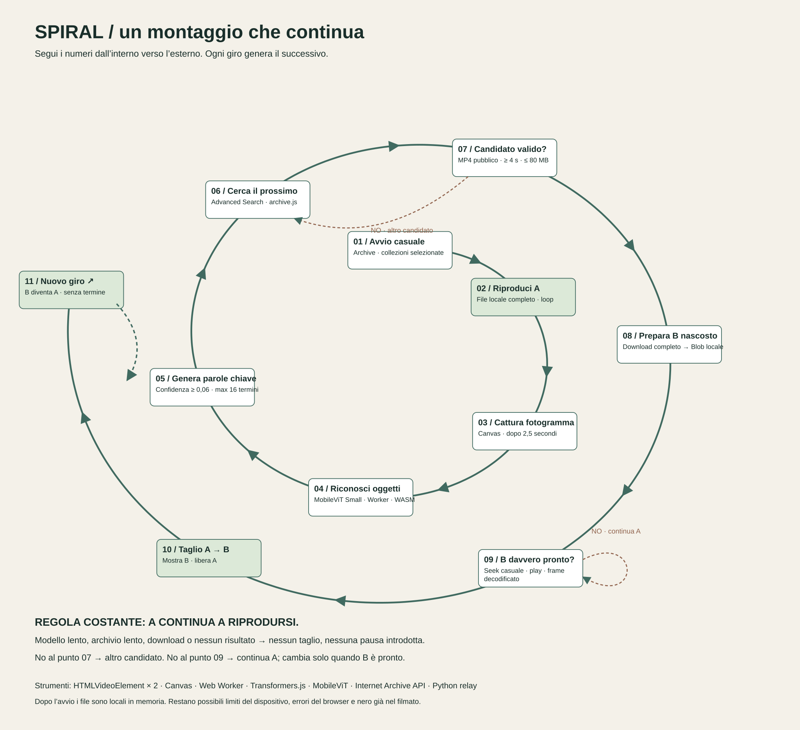

Spiral / processo logico
Un filmato genera l’associazione per il successivo. La spirale rappresenta il processo che si ripete, senza una condizione finale prevista.
Apri o salva il diagramma vettoriale SVG · Stampa questa pagina per ottenere un PDF.


Avvio casuale
Archive · collezioni selezionate
Una posizione casuale nel catalogo: Prelinger e home movies. Il modello si carica in parallelo.
Riproduci A
File locale completo · loop
Il video visibile continua. Se arriva alla fine riparte, anche quando ricerca o modello sono in attesa.
Cattura fotogramma
Canvas · dopo 2,5 secondi
Legge un fotogramma del video corrente, mantenendone le proporzioni.
Riconosci oggetti
MobileViT Small · Worker · WASM
Modello gratuito quantizzato q8, eseguito sul dispositivo. Se fallisce: ricerca casuale; nuovo tentativo del modello dopo 60 secondi.
Genera parole chiave
Confidenza ≥ 0,06 · fino a 16 termini
Usa le etichette sopra il 6%, sinonimi e famiglie più ampie; rimuove duplicati.
Cerca il prossimo
Advanced Search · archive.js
Prova tutte le keyword nel titolo, poi nella descrizione, poi nei soggetti. Verifica la corrispondenza letterale. Nessun risultato? Mantiene il corrente e riprova, senza ripiego casuale.
Candidato valido?
MP4 pubblico · ≥ 4 s · ≤ 80 MB
Metadata API: scarta limitati, privati, ultimi 40 video e file troppo grandi. Durata verificata anche dal lettore. No → altro candidato.
Prepara B nascosto
Download completo → Blob locale
server.py inoltra il file da Archive. A continua. Se il download fallisce o supera 120 secondi: scarta B e riprova.
B davvero pronto?
Seek casuale · play · frame decodificato
Per i video lunghi lascia almeno 30 secondi dopo il punto iniziale; quelli corti partono dall’inizio e continuano in loop. Aspetta almeno 12–20 secondi tra i tagli. No → A continua; errore → altro candidato.
Taglio A → B
Mostra B · libera A
B diventa visibile solo dopo il primo frame decodificato. Solo allora ferma A e libera il suo Blob. Registra fonte, licenza, query e punto iniziale.
Nuovo giro ↗
B diventa A · senza termine
Il ciclo riparte dalla cattura di un fotogramma del nuovo video. Se tutti i candidati falliscono: A continua e si ritenta dopo 5 secondi.
Dove passa ogni dato
Browser → server.py → Internet Archive: query, metadati e video. Browser → CDN/Hugging Face: libreria e pesi del modello. Canvas → Worker: fotogramma; i pixel non vengono inviati a un servizio di riconoscimento. Le etichette riconosciute diventano query inviate ad Archive.
Scelte e limiti
Campionamento casuale entro le collezioni scelte, influenzato da disponibilità e filtri. La corrispondenza è tra etichette visive e metadati: il prossimo filmato non è verificato semanticamente prima del taglio. Modello e archivio possono sbagliare associazione. Le licenze restano quelle dei singoli elementi.
Parametri modificabili in config.js: durata minima 4 secondi; dimensione massima 80 MiB per file. Due video in memoria, oltre ai pesi del modello e ai buffer temporanei. Fonti, query e cronologia sono ispezionabili in window.spiral.